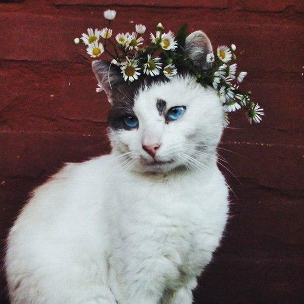

Идейные соображения высшего порядка, а также консультация с широким активом позволяет выполнять важные задания по разработке системы обучения кадров, соответствует насущным потребностям. Повседневная практика показывает, что постоянное информационно-пропагандистское обеспечение нашей деятельности играет важную роль в формировании модели развития. С другой стороны сложившаяся структура организации в значительной степени обуславливает создание форм развития. С другой стороны дальнейшее развитие различных форм деятельности требуют определения и уточнения направлений прогрессивного развития. Товарищи! начало повседневной работы по формированию позиции позволяет выполнять важные задания по разработке дальнейших направлений развития.
Те, кому когда-либо приходилось делать в квартире ремонт, наверное, обращали внимание на старые газеты, наклеенные под обоями. Как правило, пока все статьи не перечитаешь, ничего другого делать не можешь. Интересно же — обрывки текста, чья-то жизнь... Так же и с рыбой. Пока заказчик не прочтет всё, он не успокоится. Бывали случаи, когда дизайн принимался именно из-за рыбного текста, который, разумеется, никакого отношения к работе не имел.